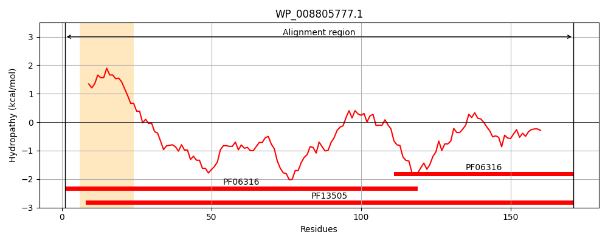
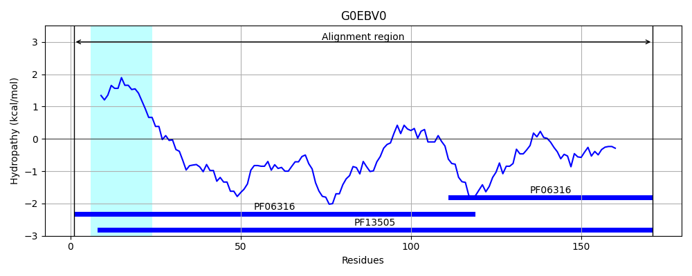
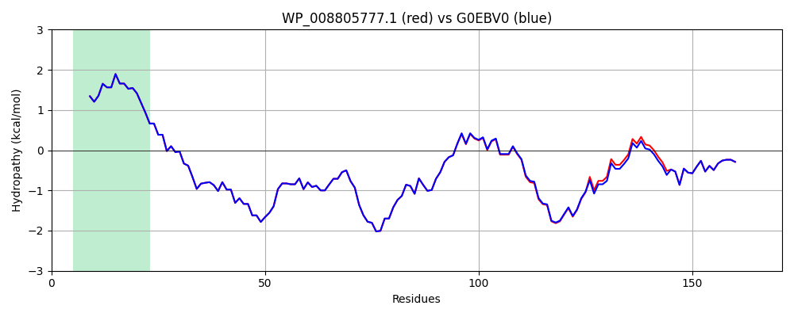

Hit Accession: G0EBV0
Hit TCID: 1.B.6.2.10
Hit Description: gnl|BL_ORD_ID|4525 gnl|TC-DB|G0EBV0|1.B.6.2.10 Outer membrane protein X OS=Enterobacter aerogenes (strain ATCC 13048 / DSM 30053 / JCM 1235 / KCTC 2190 / NBRC 13534 / NCIMB 10102 / NCTC 10006) GN=ompX PE=4 SV=1
Mach Len: 171
e:0.000000
Query TMS Count : 1
Hit TMS Count: 1
TMS-Overlap Score: 0.950000
Predicted Substrates:CHEBI:25367;molecule
BLAST Alignment:
Score: 894 , Bit scores: 348 bits, E-value: 2.5e-125, Alignment length: 171, Percentage identity: 98
Query: 1 MNKIARLSALAVVLAASVGTTAFAATSTVTGGYAQSDMQGKANKAGGFNLKYRYEQDNNPLGVIGSFTYTEKDNTSNGTYNKGQYYGITAGPAYRLNDWASIYGVVGVGYGKFQNNNFPNQKSDMSDYGFSYGAGLQFNPIENVALDFSYEQSRIRNVDVGTWIAGVGYRF 171
MNKIARLSALAVVLAASVGTTAFAATSTVTGGYAQSDMQGKANKAGGFNLKYRYEQDNNPLGVIGSFTYTEKDNTSNGTYNKGQYYGITAGPAYRLNDWASIYGV+GVGYGKFQNNNFPN KSDMSDYGFSYGAG+QFNPIENVALDFSYEQSRIRNVDVGTWIAGVGYRF
Sbjct: 1 MNKIARLSALAVVLAASVGTTAFAATSTVTGGYAQSDMQGKANKAGGFNLKYRYEQDNNPLGVIGSFTYTEKDNTSNGTYNKGQYYGITAGPAYRLNDWASIYGVIGVGYGKFQNNNFPNHKSDMSDYGFSYGAGMQFNPIENVALDFSYEQSRIRNVDVGTWIAGVGYRF 171 | Protein Hydropathy Plots: |
|---|
|  |  |
Pairwise Alignment-Hydropathy Plot:
|
|---|
|  |